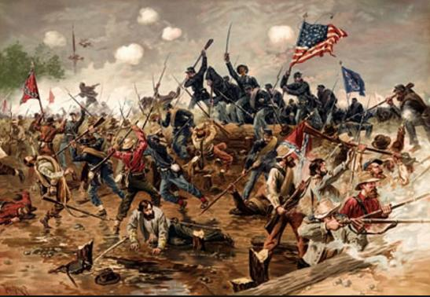

Las guerras de independencia hispanoamericanas fueron una serie de conflictos armados que se desarrollaron en los territorios americanos del Imperio español a principios del siglo xix, entre los años 1809 y 1829, y en los cuales se enfrentaron el bando a favor de mantener la integridad de la Monarquía española,6 que se conocería más tarde como «realista» o «virreinal» contra el bando a favor de la independencia o secesión de nuevos estados, denominado posteriormente «revolucionario» o «patriota».7 Estos conflictos son considerados también guerras civilesy una combinación de diversas formas de conflictos locales y global.1617
En 1808, el emperador francés Napoleón Bonaparte secuestra a los reyes españoles, y obtiene los derechos sobre la corona española en las Abdicaciones de Bayona (Francia) e impone a su hermano José I como rey constitucional según el Estatuto de Bayona. Estos sucesos terminan con el Antiguo Régimen y son considerados ilegítimos por los españoles europeos y americanos. La cesión de la corona a Napoleón provoca un vacío de poder que conduce en 1810 a una revolución liberal en América y en España, y lleva al imperio a un conflicto de alcance continental entre los nuevos sujetos soberanos, entre las cortes de Cádiz y las juntas americanas. En 1814, Napoleón es derrotado: firma el tratado de Valençay, por el cual Fernando VII recupera su antiguo derecho al trono de España, restaura el absolutismo, reprime a los liberales españoles, pero no consigue derrotar a los revolucionarios americanos. En 1820, el pronuciamiento liberal de Riego en España acaba con el apoyo militar de la metrópoli y se desmorona la resistencia española en América: los independentistas americanos obtienen sus principales victorias y consolidan su independencia.
El vacío de poder acarrea una revolución liberal en América y España. La revolución liberal española y los movimientos liberales de Hispanoamérica comienzan de formas políticas variadas, de acuerdo con las condiciones que imperaban en cada región, pero todos convergen en la soberanía popular y el Estado liberal.19 Una postura historiográfica dice que las revoluciones hispanoamericanas tienen como antecedentes la independencia de las colonias británicas de América del Norte en 1776, la Revolución francesa o la Revolución haitiana formando parte de las llamadas revoluciones atlánticas.
Entre 1808 y 1810 se instalaron muchas juntas de gobierno que ejercieron la soberanía en nombre de Fernando VII, el sucesor según las leyes españolas, tanto en la península ibérica, como en los territorios americanos. La resistencia de las juntas americanas a someterse a los gobiernos formados en España radicalizó las posiciones políticas todavía más. El establecimiento en las Cortes de Cádiz de un imperio unitario de hegemonía peninsular en ambos hemisferios, como en el Estatuto de Bayona, fue un punto de quiebre con las Juntas americanas que pedían el autogobierno; entonces se las declaró en rebeldía, comienza el conflicto armado entre el gobierno español y los americanos, y aparecen las primeras declaraciones de independencia.
Tras la derrota francesa en España, mediante el Tratado de Valençay Napoleón reconoció a Fernando VII como rey de España, y este ya como rey efectivo, rechazó la constitución española de 1812 por considerarla una constitución republicana,20 contraria al Antiguo Régimen. Las Cortes españolas, lo mismo que las Juntas americanas, defendían los derechos de Fernando VII pero como un rey subordinado a ellas. El rey veía su soberanía entregada o compartida. No reconocían a Fernando ningún poder superior, le consideraban poco más que un funcionario despojado de soberanía. Pero, la restauración de Fernando VII en la península ibérica tampoco significó la vuelta al Antiguo Régimen sino a una nueva forma de poder, más radicalizado hacía una tiranía personal, el Absolutismo. En España, a través de un golpe de Estado, el Manifiesto de los Persas, Fernando declaró estos decretos "nulos y de ningún efecto", se borró todo rastro de liberalismo, se persiguió y exilió a los liberales españoles, mientras volvían los afrancesados, bonapartistas favorables al poder establecido. En América, por el contrario, la resistencia armada de las juntas posibilitó nuevas declaraciones de independencia a través de sus congreso constituyentes y la creación de estados republicanos ahora completamente separados del Imperio español. El conflicto militar dio paso a la aparición de la figura de los libertadores, entre los que destacaron Hidalgo y Morelos en México, el argentino José de San Martín en Argentina, Chile y Perú y el venezolano Simón Bolívar en Venezuela, Colombia, Ecuador, Panamá y Bolivia.
La independencia de los nuevos estados de América se consolidó en la década de 1820 debido a las consecuencias político-militares del Pronunciamiento de Riego, que en España dio paso al Trienio Liberal, en México derivó en la creación del Ejército Trigarante en 1821 y en América del Sur al principio del fin del último ejército virreinal en la batalla de Ayacucho en 1824, suceso al que se suele recurrir como el fin de las grandes campañas de las guerras de independencia en América del Sur.212223 Aunque el periodo estricto de lucha militar comprende desde la batalla de Chacaltaya (1809)24 o el combate de Cotagaita (1810), en el actual Bolivia, hasta la batalla de Tampico (1829), en México.25
Los últimos bastiones españoles son el Castillo San Felipe en Puerto Cabello hasta 1823; en San Juan de Ulúa, Veracruz hasta 1825. Por último, en enero de 1826, caen los reductos españoles del Callao y Chiloé. Solo permanecen como últimos dominios españoles las islas de Cuba y Puerto Rico, que resisten como bases de la reconquista tras los frustrados planes colombo-mexicanos de expedición conjunta para la liberación de Cuba (1820-1827).26 El último capítulo de la guerra terminó con la tentativa de reconquista de España contra sus antiguas posesiones mexicanas en 1829, cuando la expedición de Isidro Barradas llegó a Tampico y fue derrotada por el Ejército Mexicano. Sin embargo los gobiernos independientes tuvieron que enfrentar las guerrillas realistas, por ejemplo entre 1823 y 1827 en Venezuela; entre 1822 y 1826 en Pasto, Colombia; hasta 1832 en el sur de Chile, apoyados por mapuches y pehuenches; y hasta la década de 1830, la guerrilla de Iquicha en Perú. Las independencias americanas tuvieron como consecuencia directa la emigración forzosa de la población civil española sufrida durante la guerra y posteriormente persecución y expulsión debido a las leyes de Expulsión de los españoles de América de los nuevos estados con el objeto de consolidar su independencia.2728
El reconocimiento internacional de las independencias llega desde el Reino Unido de Portugal y Brasil en primer lugar. Seguidamente los Estados Unidos, el Reino Unido y Francia establecieron relaciones comerciales con los nuevos gobiernos americanos y posteriormente reconocieron la soberanía de los nuevos estados a lo largo de la década de 1820. Sin embargo España sólo abandonó los planes de reconquista después de la muerte del rey Fernando VII, ocurrida en 1833. Las Cortes españolas renunciaron a sus posesiones en América en 1836 y autorizaron al gobierno para realizar tratados de paz y reconocimiento con todos los nuevos estados surgidos en el continente.
El 5 de diciembre de 1492 Colón llegó a la isla de La Española, actualmente dividida en dos países (Haití y República Dominicana), y formó allí la primera colonia europea en el nuevo mundo. La expansión castellana hacia el oeste produjo tensiones con Portugal, pidiendo ambos reinos la mediación del papa.